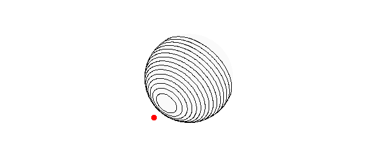

1. A little geometry
Here's a vector $X$ with 2-norm 1.5, which we will think of as a spacecraft in orbit around the unit sphere:
X = [-1 -1.1, -.2]; norm(X)
ans = 1.500000000000000
Let's use the vector-valued part of Spherefun to define the field of vector distances between $X$ and points on the sphere and $X$:
d = spherefunv(@(x,y,z) X(1)-x, @(x,y,z) X(2)-y, @(x,y,z) X(3)-z);
Here is the scalar function representing $|d|$, that is, the the scalar distance between $X$ and points on the sphere:
r = sqrt(dot(d,d));
We confirm that the closest point on the sphere to $X$ is at distance $0.5$:
min_distance = min2(r)
min_distance = 0.500000000000014
Similarly, the farthest point is at distance $2.5$:
max_distance = max2(r)
max_distance = 2.499999999999999
Here is a contour plot of $r$ on the sphere, together with a red dot showing our little spacecraft.
contour(r,.6:.1:2,'k') hold on, plot3(X(1),X(2),X(3),'.r','markersize',25), hold off view(-10,35), axis equal, axis off

2. Inverse-square force
A great discovery of Newton (or was it Hooke?) is that the gravitational forces associated with a sphere of uniform mass distribution are the same as if all the mass were concentrated at the center. Accordingly, we know that if a unit mass is spread around the sphere and the spacecraft also has unit mass, then the inverse-square attraction between them should be $(1.5)^{-2}$:
force_exact = 1/1.5^2
force_exact = 0.444444444444444
Let's confirm this prediction by computing the integral over the sphere. Since the area of the sphere is $4\pi$, the density of a uniformly distributed mass is
rho = 1/(4*pi)
rho = 0.079577471545948
That gives us the following component of the force at each point, in the direction of $X$:
Xnormalized = X/norm(X); force_function = rho*(Xnormalized*d)./r.^3;
Summing, we get the expected answer:
force = sum2(force_function)
force = 0.444444444444444